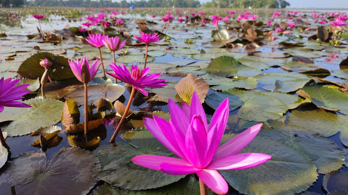
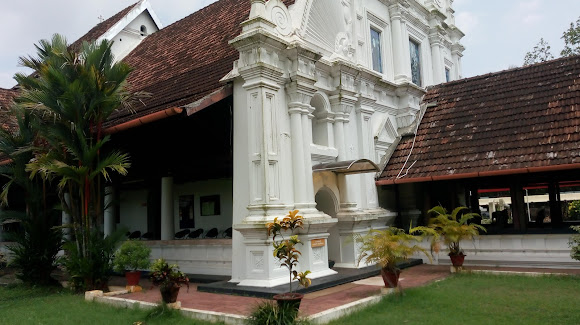
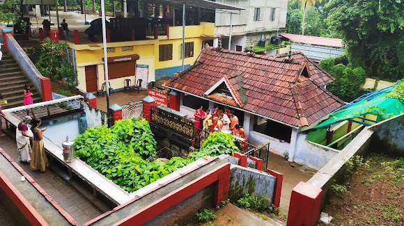
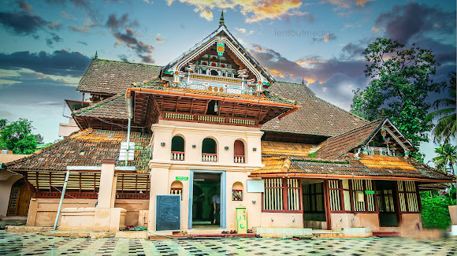

malarikkal sunset view point
Riverside viewpoint over water lilies

kottayam cheriyapally
St. Mary’s Orthodox Syrian Church, Kottayam, commonly known as Kottayam Cheriapally, is a Malankara Orthodox Syrian Church located in Kottayam, Kerala, India.

Panachikkadu Dakshina Mookambika Temple
The Panachikkadu Temple, also known as the Dakshina Mookambika Temple, is a Hindu temple dedicated to the goddess Saraswati. The temple is located in the southern region of the Indian Peninsula, in Panachikkad in Kottayam District, Kerala, India.

Thazhathangady Juma Masjid
Thazhathangady Juma Masjid is a mosque situated in Thazhathangady, one of the Heritage Zones of Kerala, India, near the town of Kottayam. It is one of the oldest mosques in India and is more than 1000 years old.